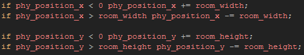
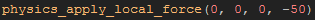
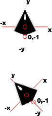
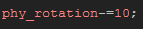
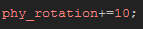
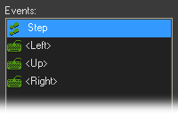

Tutorial
Page 4 of 7
Movement
As this is going to be a game based on asteroids, before we can add out player ship to a room we need to make sure that the instance will loop around the edges, ie: if it
flies out the left then it should come back in the right. To do that we need to use a script to wrap the room in the step event. Create a new script resource and
call it "phy_wrap", then copy the following code:

Note that we do not use the standard x/y for position. As mentioned before, the traditional movement and collision system does not work well when physics is used, so we have to
adapt our codes to use these new constants and variables. You should create a script call to this new script in the step event of our player ship object.
Now we need to add movement to our player ship, and for that (again) we need to use some specialist physics functions. Add in a keyboard event for the up arrow, and in it add the
following line of code:

The above code uses the local coordinate system to set a vector for propulsion. But what does that actually mean? Well, the sprite as it is in the sprite editor, has an x
and y axis that meet at the origin. This is the local coordinate system for the sprite, and is translated to the fixture we have assigned too. This means that, no matter what way
we rotate the sprite, local "down" will always be a vector of x=0, y=-1 around the local origin of the sprite. Here is an image to illustrate:

As you can appreciate, even rotating the sprite in the room, the local coordinates are maintained. Now, back to the code! What it does is take a vector using the local coordinates along
x=0, y=50, meaning that it is adding force (push) always from behind the ship, no matter what way it turns. The amount of force is dictated by the length of the vector, so a
large number is a greater force applied than a smaller number.
We now have to let the player rotate the ship so that it doesn't just go in a straight line, and for that you want to add the following code into the left arrow event:

and then this code into the right arrow event:

With these two lines of code you will be adding and subtracting to the physics rotation, which is what now controls the direction and image angle of the instance. We could
give the ship a more natural turning by using physics_apply_torque to rotate the ship using "torque" (rotational force) as this will take into account the mass of the ship
and make turning slower, much like a real life object, however in a game you don't always want it to be too real as that can often spoil the fun! Note, that another difference
between the physics world in GameMaker:Studio and the traditional functions, is that normally the direction and image angle are calculated anti-clockwise so adding 10 to
the direction variable would rotate the object to the left, yet with the physics on it is clock-wise so adding 10 onto the rotational value rotates the object to the right. The event list of
your player object should now look like this:

Click on the Next button to go to the next page of the tutorial.